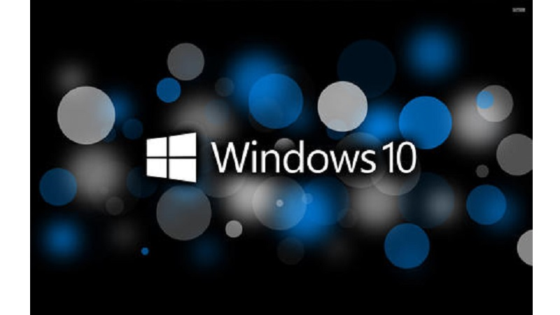
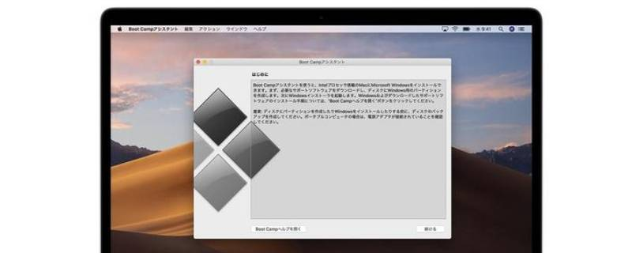

win软件
点此查看
win系统下的各种软件。Microsoft Windows操作系统是美国微软公司研发的一套操作系统，它问世于1985年，起初仅仅是MS-DOS模拟环境，后续的系统版本由于微软不断的更新升级，不但易用，也成为了当前应用最广泛的操作系统。

Mac软件
点此查看
mac系统下的各种软件。mac是苹果公司研发的一种个人消费型计算机。Mac使用独立的macOS系统，是苹果计算机继LISA后第二部使用图形用户界面的计算机，是首次将图形用户界面广泛应用到个人计算机之上的电脑产品。